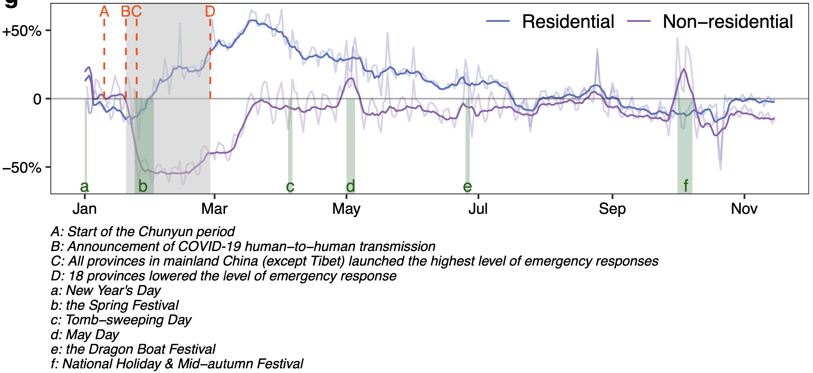
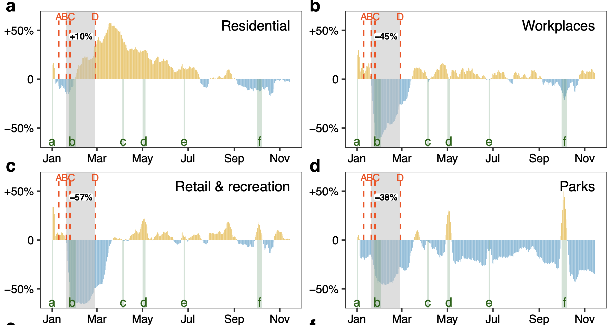

Data
COVID-19 caused widespread disruption to normal lives and human activities. In China, the mobility behaviour response to the COVID-19 pandemic at the intra-city levels is largely unknown, mainly due to a lack of individual-level publicly available mobility data.
Globally, the Google Community Mobility Report provides a percentage change in place visit frequencies in six types of locations to help understand people’s social activities within cities, but this dataset does not include mainland China.
Here, using 210 million geotagged posts from 10 million users in Weibo social media platform, our team provides fine-grained mobility data describing the daily percentage change in visits to functional amenities in China during 2020 compared to the baseline in 2019.
Feature
The fine-grained mobility data could supplement the available city-level mobility metrics and fill the gap in Google Community Mobility Report in mainland China.
With this prior knowledge, governments can formulate corresponding policies for economic recovery, provide post-epidemic assistance to specific groups in need, and be well-prepared for the next global emergency.
Using massive geotagged social media data
Percentage change in number of visits to specific places in China during 2020
Non-residential or Residential places

Six categories of places

About data
Geotagged social media data in China.
Feature
Download
Download link: https://github.com/CASGIS/Socialmedia_Mobility/tree/main/publication/aggregated_geotagged_data
How to cite
Using XXX Dataset should cite: XXX
Data detail
Data source
We collected 210 million geotagged posts uploaded by 10 million users from Weibo from 2019 to 2020. Weibo, the Chinese version of Twitter, is the most widely used social media platform in China (https://weibo.com).
Data process
- Referring to the classification criterion of categories in Google Community Mobility Report (https://www.google.com/covid19/mobility/), we classified POIs attached to geotagged posts into six categories of places by their social function.
- Counting the daily visits to these categories of places for each cities.
- Smoothing the daily visits by the method of 7-day moving average.
- Calculating the percentage change by comparing visits to baseline days. The baseline days represent a normal value for that day of the week and are given as the median value over the period of the second half of 2019.
Data description
| Column | Description |
|---|---|
| ct_adcode | city code |
| city_ch | city name (Chinese) |
| city_en | city name (English) |
| pr_adcode | province code |
| pr_ch | province name (Chinese) |
| pr_en | province name (English) |
| created_at | date |
| category | six categories of places (Residential, Workplaces, Retail & recreation, Parks, Transit stations, and Grocery & pharmacy) |
| visits_7MA_percentage_change | percentage change in number of visits compared to baseline days |
Contact us
zhukaixin@lreis.ac.cn
wangjh@lreis.ac.cn
Team: https://github.com/CASGIS
Institute of Geographic Sciences and Natural Resources Research,
University of Chinese Academy of Sciences